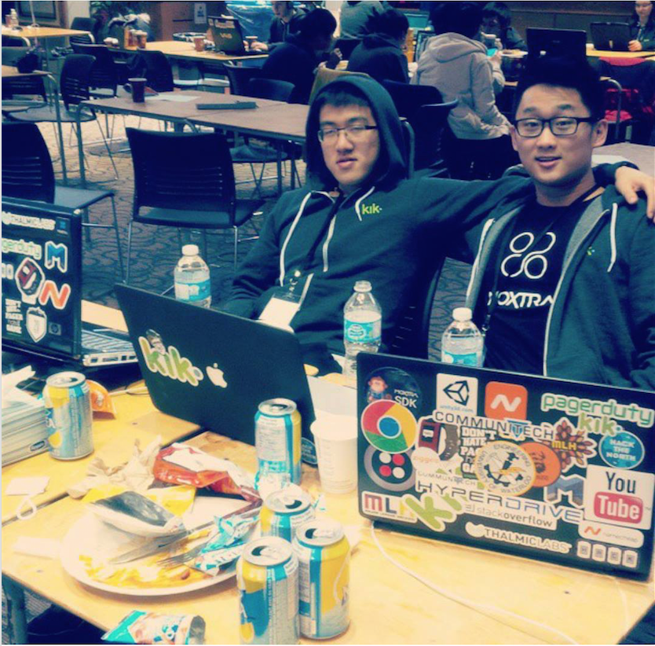
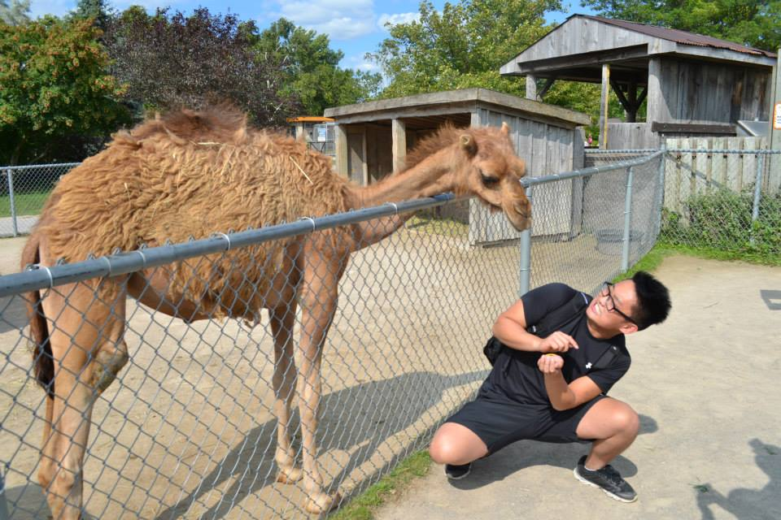

Bloggin'
A Place where my mind roams free and my fingers speak.
Part 2: Awesome Places w/ Awesome People – Atlanta, Georgia + Chicago, Illinois
September 25th 2015
Note: If you haven’t read Part 1 yet, feel free to scroll down and do so! This is a continuation of that story so come back after you’re done! …… You’re still here? Well I’m guessing you are all caught up. Welcome!
So where do I start? Hmmm…
So I got up the next morning pretty early (a little too early) and just chilled on their sofa. Karthik messaged me to come down so he can bring me to their student center which was pretty cool of him to voluntarily take the responsibility of making sure I knew my way around. He took an early shift at their gym before his afternoon classes which kind of shows how hardworking and dedicated he is - super. I spent the day meeting up with a recruiter to do an interview, exploring around their campus, and ended up watching a good half of the movie “Maze Runner” downstairs of GT’s student center (yeah, they put full blown movies up on their TVs…#jealous). A funny thing is that I accumulated 3 mosquito bites on the feet and leg while watching the movie. Apparently, Georgia Tech was built on a huge swamp so that’s why there’s always a ton of bugs laying around (and some are pretty huge.) I dropped in on Karthik’s AI lecture which was pretty cool and … also tried Chick-felit (recommended,) I walked around campus for another hour by myself until I met up with a fellow Canadian hacker, Ash. He’s a pretty smart guy that would later be an essential teammate of mine for the hackathon. I wasn’t sure at first because it’s always risky forming a team in a hackathon without knowing eachother’s strong points and abilities. Not just that – personality is a big part of a good teammate.
So back to business - my HackGT team. I was pretty impressed at my team’s firepower. Everyone was pretty cool and we spent it killing it pretty hard. One of my teammates was actually a full scholarship varsity football player slash software engineer so yeah – dam. Overall, HackGT was a pretty good experience. The food was pretty good even! If I was to change a few things about the hackathon internally – it would be simply making the judging process a little more organized. Only one person walked by and talked to us while we were setting up and that was the judge! I would much rather Hack the North’s way where we walk into a room and get judged by 4 people so biases wouldn’t be so prevalent. Either way, it was cool.
I made my way to my Airbnb booking and it was awkward at first. It felt like I was somewhat intruding but the homeowner was tremendously welcoming. My bed was actually in the middle of the kitchen so that needed a bit of an adjustment but the host’s dog made it extremely easier :P. Meanwhile, a girl name Rachael slept on the bed across from mine (yeah…2 beds in the kitchen aha) and we hit it off pretty well! She was visiting from Texas and like myself, planned to visit around Atlanta. We ended up getting a CityPass and toured around Atlanta together! Went to the CNN headquarters and learned a bit about television broadcasting. Visited the Georgia Aquarium and saw a dolphin show! And was lucky enough to make it to the World of Coca-Cola building before closing! All and all, it was a great adventure and I was fortunate to have been able to have met a travel buddy like Rachael (Airbnb connecting paths!) Thank goodness it was all walking distance though :3 I treated Rachael to Benihana (Japanese Cuisine) which was an experience within itself. My silly self didn’t do enough research and thought that it was a quick grab and go sushi place. It was actually a “chef-cook-infront-of-you-and-very-fancy-performance” kind of restaurant. Our chef was doing knife flips and unbelievable tricks right in front of us. I would’ve definitely enjoyed it more if my flight wasn’t cutting it so close. Rachael ended up driving me to the airport so it was all good! I’m super lucky to have met her.
So I got to the airport and checked in. While I was on the plane from Atlanta to Chicago I was talking to a guy (Kelvin) that was sitting beside me. We talked about my work, how hackathons work, and my plans for the future. He worked in operations/supply-chain management and was incredibly insightful. Near the end of our flight, he asked how long my layover was and I told him 20+ hours (I know it sucks) so he was trying to get me into the Admirals VIP lounge so it’ll be more comfortable waiting but before getting there, he turned around and asked me “how adventurous are you?” and I replied “very.”
This is where things get pretty interesting. They ended up offering me to stay at his buddy’s place since they are going back to the airport the next day to fly to Spain for their friend’s wedding. I wanted to visit Chicago anyways so I took him up on the offer. Originally, Kelvin told his friend who was picking him up that I was his cousin but the lie was exposed pretty early aha. Once we got to the bachelor pad – it was impressive. He had a decently big living room and a room dedicated to trading stocks. Kelvin needed a haircut so we went down to Chinatown and got dim sum. I got a pretty nice fade :D and my barber was pretty dam legit. You could see that he was passionate about hairstyling. I even took a picture with him aha (I’m so awks). In the end, we went back and ubered to the airport. We chilled in the VIP lounge before the departing. Unlimited food FTW! Kelvin and Joseph had an earlier flight so I chilled by myself watching dramas and catching up on homework aha. So during my flight back, I met an old couple that was so CUTE! I helped them move their luggage and learned that they had a professional hockey player for a son. Told me some cool stories :P
I ubered back home when I landed in Waterloo. Immediately, I took a deep breath of fresh Canadian air. Can’t wait till I get to go back to the US for work!
So the major takeaways for this trip: I’ve learned a lot the past few days.. One is to be bold. Like Blackberry, strive to be different and do the impossible – no matter what. They are currently hustling their way back to the top of the tech industry and I’ve encountered plenty of people doing just that but in their own unique ways. I was fortunate to have met an Uber driver who is trying to make a few extra bucks to support his family and his newborn baby boy. Saw how my Airbnb host rented out all her rooms to make ends meet even if it met for her to sleep on the couch. Caught a glimpse of how a stock broker stands guard by his computer screen 24/7 (computer is always on with alerts ringing every minute!) All in all, it gave me a chance to take a step back and look at the bigger picture. I’ve been burnt out and that is true. I’ve taken a beating (academic aha) in school and that is true. I’m super tired and yeah, true. But I’m not done yet. I am on my own journey of hustling. No matter what and no matter for who, I will contribute the best of me to whatever I do. You have my word.
Part 1: Going to HackGT! – Atlanta, Georgia
September 25th 2015
Currently, I’m pretty much staying at a stranger’s dorm in another country but mom don’t worry! It’s actually pretty funny.
So the night before I had to stay up to finish a couple of assignments due this weekend since I’m going to be away. First things first (I’m the realest) is school . I ended up getting in a couple hours of nap time and packed for the trip. I didn’t really pack much actually – just 2 t-shirts, a boxer, and shorts. Tried to keep it as minimal as possible (practicing to be a minimalist!) I ubered to the Waterloo airport which was my first time ubering by myself (2nd time using Uber in total) and my driver was pretty cool. He was pulling off a couple jobs, has 2 young girls, and expecting a baby. He was even a soldier back in Africa for 7 years then escaped to Ethiopia to seek Canadian status. He’s the definition of refugee hustle. Before he dropped me off at the airport – he said something that really put me back – he said “just keep pushing and do the best at what you want to do and don’t look back.” Throughout the whole ride, he showed genuine kindness but you can see he wanted more – but he couldn’t. He has a family especially a baby on its way. Taking chances is out of the question for him. I told him that it’ll make sense soon. When his kids grow up – they’ll help him make his dreams come true. I don’t know if that helped in any sort of way but we said our goodbyes with nothing but smiles.
My plane ride to Atlanta was fun but tiring – with a tint of frustration. I kind of almost missed my flight from YYZ (Waterloo Airport) because I thought these smaller capacity flights wouldn’t need an hour early of check-in time but for my homies out there that didn’t know – you do. So in the end, I got on the plane. Yay! Sat beside two older couples that didn’t laugh at my jokes which kind of made it a little awkward (well I guess I made it awkward aha) then worked on my Hack the North blog post during the flight. As I was getting off the plane, I met a guy that was sitting behind me whom was going for a meeting in Seattle for Microsoft for a fulltime SE position. He seemed like he had everything together – dressed really well. Then the connecting flight from Chicago to Atlanta was a bit of a pain. Had to go take a train and a couple of long lines which made it feel a little stressful but hey, it’s an airport. When I finally checked-in to my Atlanta flight, I had 2 hours to kill so I walked around the airport. I bought a plain bagel toasted with cheese and eggs then made my way to McDonald’s and got 20 pieces of Chicken Nuggets. Dam that was good. Probably going to get more in the upcoming days – not probably, almost for certain. My plane trip to Atlanta was pretty smooth. The pilot came out and greeted everyone with a huge smile. You can definitely see that he loves his job. I actually fell asleep and caught myself snoring before the plane even took off so that was a bit comical for the girl that sat beside me. I think she even giggled a bit when I tried to play it off cool like I wasn’t actually snoring – was actually just coughing. Huh? Well it obviously didn’t play out that well. But overall, I looooooooove planes.
When I got off, I tried contacting my AirBnB guy – Rick. He never picked up, even till now. Hopefully I get some kind of refund back. I ended up purchasing a roaming plan which was pretty shitty but you know – when in Rome. What can you do. I decided to go straight to Georgia Tech from the airport and just sleep there since finding a place or hotel is probably out of the question (both time wise and financially). I used Lyft (had a first time user special) to get to the campus. The funny thing was I got into the wrong Lyft car and the driver realized then had to back up and drop me off. It only took less than a minute for my actual driver to pull up with his grey Charger but it was definitely funny. It was also raining pretty hard which sucked. Omar was the name of my driver. Super cool guy. Like my Uber driver from before, Omar was also a hustler – jack of all trades. Use to live in Miami, moved to Atlanta, an audio engineer with his own studio, a certified personal trainer (he looks like one too), and also an aspiring actor. With all honesty, he does look like he could be a pretty good actor. Has the strong build and looks like he can certainly do some nice fight scenes. Hit Omar up if you’re an agent! We talked about a lot of things – from girls to security software to sororities and frats, he knew his stuff. He was like the ultimate tour guide with the bonus of a body guard.
So I got to Georgia Tech’s what I assume is a student center of some sort and walked around like a lost puppy trying to find a place to sit and grab WiFi. I ended up sitting at multiple places and hoping someone would be like “hey, you don’t look like you’re from here so here’s the WiFi password” but nope, sadly no one did . Starbucks was downstairs so by this point I was content with just sleeping there but when I saw a guy with few stickers (he had a MHacks sticker) on his laptop, I decided to ask him for the WiFi. His name was Karthik. Extremely nice but was stuck on some kind of C + lbshh download thing which got me confused but I tried to find some more capable guys to help him out (my ability of C has really declined from lack of use). We talked about some Canadian stuff and compared it to some American stuff and overall, the conversations we had was pretty enjoyable. And I don’t know why I am always surprised when someone knows about my university (Waterloo) since it’s one of the best engineering/compsci schools in the world but I was. They knew that Waterloo had one of the best engineering and computer science programs which could be a good/bad thing for me – now I have even higher standards and expectations to surpass. After all that ordeal, my great stranger friend – Karthik invited me over to his friend’s residence which was a good 10-15 minute walk while he showed me some nice unique campus features and shared weird traditions in the school (Georgia Tech likes to steal the letter T’s from the word Tech in their name which is a tradition – odd but hilarious). When we got into the residence, we chilled for a good 30 minutes talking to each other (4 people in total) about our countries (Canada and USA). Karthik ended up sleeping somewhere else in another nearby building so I have the whole couch to myself. But yeah, I realized if I haven’t have said hi to Karthik, I wouldn’t have gotten WiFi or a couch to sleep on or even gotten the chance to meet some wonderful and awesome people. We kicked it off pretty well. I’m glad the AirBnB guy flaked (I still need a refund tho bro) but now I have a place to stay overnight! Huge ups for the hacking community!
What a day. Lets hope tomorrow will be even more fun!
Hack the North: The Hackathon that changed my life.
September 24th 2015
So it has been officially a year since I went to my first hackathon – Hack the North 2014. And up until a couple days ago, I came to realize that it was the hackathon that changed my life – corny but seriously.
I’ve always been fascinated with code – it was like art created with a keyboard but always pushed learning new frameworks and going in depth with a language aside telling myself I will get to it later. It was not that I wasn’t passionate about programming but saw it nothing more as just colorful numbers and letters on the screen. Oddly enough, I won the computer science award for my high school (packed full of very strong programmers).
Fast forward to the summer before my second year in university, the Hack the North hype was beginning to make way but I was completely oblivious to how big it actually was. My buddy clement talked to me about it and I realized a few weeks ago, I applied. We decided to make a team but with very limited coding abilities (well considered amateur in a university world-renowned for computer science) and the lack of experience in deving in general, I was super NOT confident and didn’t know how I even got in. I believe I even told the team that I was probably going to be a heavy backpack but being the buddies they were – they told me not to worry and that I’ll learn. As the date got closer, I kept looking over different frameworks and syntaxes. Did it help? Not really but it was worth a try.
So HTN finally came. Everything was a blur but I remember being overwhelmed with the amount of free swag, the amazingly delicious food (quantity and quality were on point), and feeling kind of useless (my team was carrying pretty hard). That was definitely a wake up call. I remember watching the guys stress in front of their screen filled with compacted syntax but I couldn’t do anything about it. Yeah, that really sucked. That was a huge wake up call.
How did HTN change my life? Well it woke me up. HTN basically told me it was either I get up off of my ass and do something or sit back and just let opportunities pass me by.. That was a big hit.
A year has passed and Hack the North 2015 just happened a few days ago. What has changed? Well I have gotten the chance to attend over a dozen more hackathons and was fortunate enough to win some! I’ve learned more frameworks, dived deeper into specific languages, put some apps on the Google Playstore with a few thousand downloads, and most importantly still want more. Thanks Hack the North for accepting me!
HTN 2015 was one to remember. My friend Kevin and I went in needing 2 more teammates and was able to grab 2 people from Michigan (Kevin knew them from San Francisco). We built a social justice app that used the Dropbox API as well as FireBase’s to make everyday people’s lives a little safe. It’s called FedUp – check it out! This year – although I wish I would’ve been more valuable on the backend of our hack, I took the role as the frontend developer for the android platform – more specifically I was the UI/UX designer for the team. I’m definitely more comfortable with frontend but I don’t want to get too comfortable… make sense? My goal is to master – well indulge myself in backend learning. Wish me luck! Then I can fully call myself a fullstack monkey. So yeah, once again I got the chance to work with my buddy Kevin. He was the same person whom I was fortunate to partner up with and win the 2015 Kik Hackathon. How would I describe him? Well he’s definitely one of the smartest homies I know. He’s basically Navy Seal quality – he’s good at getting good. Hard working and determined – someone everyone should inspire to be. That’s what’s cool about going to hackthons, you get to see people like him prosper. Bro, if you ever make your way into this blog post – I love you man. For HTN, I didn’t bother going home to sleep even though it was only a 5 minute bus ride away. For the first day, I focused on getting the android front end up and physically working – basically a skeleton for the guys to start attaching the meat to the bones. I think what people usually forget in hackathons is the pure presentation of it all. Making your hack look pretty is a big thing. Backend is cool but frontend is beauty. So for anyone who wants any tips for hackathons – learn some great frontend skills. Making it look beautiful is a big part of a winning hack.
As the hack went on, I noticed a lot of people gave up on their projects which is understandable. Having to make something “great” from scratch and also within 36 hours (generally no sleep) is something only crazy people would put themselves thru. I was fortunate enough to be part of a team that luckily had the same drive that I did. Thanks Francesco, Kev, and Jeff. Also want to thank my buddy Moose – he stuck with me to implement a Gif onto the android app and it was definitely harder than it sounds (or maybe I was just super tired). And we’re still moving with FedUp! We’re looking for partners! So if you’re interested, get in contact with us!
And apparently, there was some kind of controversy going on during HTN. (If you don’t care about this incident, feel free to skip to the next paragraph!) Some kids made bomb jokes (related to Ahmed – the kid who brought the clock to school which was mistaken for a bomb) and were kicked out of HTN. I’m not very informed obviously since I only knew about it a day or two after HTN ended but with all the information I have somewhat accumulated – my stand is simple: hackathons are still new – lets not fight MLH, HTN, or any hacking organization because of this incident but grow beyond it. Whether you agree or don’t agree with kicking out those two kids, don’t kick and punch MLH out online. That does nothing. It will discourage them and other organizations from genuinely giving us more opportunities to hack. We as coders, entrepreneurs, designers are very fortunate to live at a time where we can do these kind of things and be financially supported for it. Common man, don’t tell me your wardrobe is not >50% filled with tech shirts. I do think it’s a petty thing to kick those hackers out because of a joke that we can all safely assume is simply a joke but also know that there is protocol. If that joke was made in an airport, hell would’ve broken loose. MLH and HTN had to follow the policies and they did what they had to do. Could there have been something else they could have done? Definitely so but bashing them online won’t do anything constructive. We as the hacking community should work together to make it better not rate it 1 star on google – dude that’s pretty stupid if you think about it. That’s my stand on the issue.
So now what? Well I want to thank Hack the North, Major League Hacking and the hacking community for giving me and the millions of us the opportunity to have fun coding, make friends from all over the globe, and most importantly – be inspired. I also want to thank my buddy Clement. I know you’re in Cali having the time of your life but I want to say thanks man. Thanks for not giving up on me and keep constantly pushing me to be a better coder, hacker, whatever there is. You da real MVP. As of right now, I’m on a plane from Waterloo, Canada to Atlanta, Georgia to attend HackGT, a hackathon held in Georgia Tech. That’s pretty amazing. I’m also doing an interview somewhere around there so wish me luck!
For my final notes – everyone should go to at least one hackathon. It doesn’t have to be as big as Hack the North. It can be just a few friends gathered in a room to work on a project together. For my friends that don’t code – don’t worry, find a buddy that does. As long as you have the drive to learn, you can do it. Anyone can do it. That first “hello world” can really change your life. There’s plenty of free, user-friendly resources out there to get your hands dirty. Take advantage of it. Writing code is the future. No matter if you’re technical or not – everything can be coded, hacked, and innovated.
Hope to see you guys at a hackathon soon!
LET'S TAKE A STEP BACK.
September 15th 2015
It’s been awhile since I’ve gotten the chance to sit down and whole-heartedly reflect on life. So to start, I want to say that I’ve learned a lot these past few months – about myself and different perspectives. I think it’ll probably be a bit easier to explain through listing these as lessons – eh? I’m not sure where I will be going with this list (of so-called lessons) but hopefully the future “me” can go back to this and enjoy this post and laugh at the hideous grammar mistakes or even better if someone can take something out of it! Here goes nothing.
1.Treat everyone as if they were the smartest person you’ve ever met.
My friend Clemmy mentioned that to me (probably when we were eating instant noodles at 4am in the morning) and it really got me thinking. If we took away our macho egos and view everyone as our teachers, we will not only instill positive vibes into people but also open ourselves up to more opportunities to learn! You know that saying about “don’t judge a book by it’s cover?” Yeah that one. It’s extremely touché but absolutely true. If we approach everyone as a book regardless of whether it has a flashy cover or not - the less we put the book down and the more we take the time to flip through it, it is indefinite we will learn. No one person is the “best” at everything. The guy that you may pass by without taking a second look could be very well the best yo-yo player in the world but we will never know. Respect comes a long way and by doing so, opportunities will follow and doors will open which brings me to lesson two.
2. Start a conversation with everyone.
Yeah, even strangers. Forget what your mom said (unless you are not an adult and/or in a reasonable safe location/situation). One of the best and funniest lessons I’ve learned these past few months is that there is no harm in striking up a conversation with a total stranger. Growing up in my family’s little corner store, I was always extremely talkative. I would often talk to customers for hours on end. It’ll start with them asking about which rice cooker to buy then somehow transition to them telling me that they are a WWII veteran whom became a zoo keeper for a liger (breed between a tiger and a lion – true story). Whether it is because I’m a bit more self cautious now (starting random convos are a little weird) or that I’ve grown to be greedier with time, the desire to say hi to a stranger have gradually decreased. It can even be that as people get older, we become overwhelmed with how big this world actually is and how small we as humans are. Sorry for going a little off the road.
Let me share some funny examples with you! Group of my friends and I were doing an apartment tour at One Columbia (needed to find a place to stay for the 2016 academic term) and spent almost an hour negotiating the price with their management. In the end, the price didn’t budge so we decided to leave our name and number and walked out. Their offices was on the roof top of the building (pretty nice views eh) so when we came out of the office, we had to take the elevator down. When we got into the elevator, a middle aged man walked in as well. During the one minute ride down in the elevator, we continued to discuss the apartment arrangements and concluded the price was way out of our budget. I noticed the man kind of listening in on our conversation and he looked like he was somewhat of a staff member there so I asked for his input. He gave me a few suggestions on which style suite was for which and 30 mins later, he disclosed that he was the boss and gave us an incredible deal. If you’re reading this boss man, thanks Mr. Schembri.
So yeah that was pretty cool.
3. Friends with Benefits is a good thing.
I believe everyone should (need to) have friends with benefits. Hold up homie, what? Well not the FWB many people know but similar. I’ve learned that in order to be a better self, one must surround themselves with better selves. Essentially, your friends are an extension of you and vice versa. Your bros in college or your homies from back home are all products of FWB. Ever heard of the saying “you’re the average of your top 6 friends?” In a broad perspective, that is true. That doesn’t take away the fact that you are unique but you are just as unique as anyone else. But let’s get back to the “Friends with Benefits” theory.
So what is benefits? Benefits is simply the respect and admiration you have for your friends. Each individual by your side should always be someone whom you inspire to be – someone whom will make you a better you. This is not to say that you must find the “perfect” friends but to find inspirational ones. Variety is definitely a must or it’ll be boring. Having a “NO” bro is one of the most valuable friends out there. Gives you a different perspective on things and opens doors to new possibilities. Homies (I like that word ) are like mentors. Having great friends is equivalent to having great mentors.
At this stage in life, I’m pretty happy to have met the people I’ve met. I’ve spent a good 2 years in university already and have gotten the chance to meet the brightest, funniest, and most determined minds. My friends have mentored me, challenged me, and inspired me to be the absolute best that I can be. I can only hope that one day I can do the same. I’m at a stage in life where there are many uncertainties and have found myself lost in the dark countless times but that’s why you have good quality friends. Friend’s whom will pick you up when you’ve fallen on your back, shine a light when the power goes out, and build a door when you feel backed up to the fall. I believe your friends will always be there when you pop champagne but it is your homies who will be in the front lines when your bottle is empty.
Friends with benefits are people whom are motivated, inspirational, and loyal individuals and will push you to work harder, dream bigger, and live life happier. When you find them, you’ll know it’s them – homies4life.
4. Don’t be afraid of failing.
I think the real “F” word that society has really learned to despise and try every attempt to avoid is the verb “Failing.” Modern society has embedded the idea that hard work simply leads to success – just like 1+1=2 but that’s simply not the case. Life is full of surprises and set backs; with risks becoming bigger and repercussions growing more serious as we get older. When one shows defeat or encounters failure, it’s the notion that something is wrong with you – that you are somehow in someway at fault. Actually, scratch that. It’s not failure we fear but the perception of society; friends, family, public that we are afraid of disappointing and experience judgement. Can we escape it? No. But we can definitely change how we perceive it. Rather than taking it as an ultimate guideline or standard, we can see it as a goal to surpass. Make sense? I hope so…
So how about me? I’m not really sure. The judgement of others is and will forever be present but it’s our choice to acknowledge it. I’m still trying to figure that out. I feel like many times, we find ourselves mistaken our own goals for other people’s and run races that we were not met to compete in and it wears you out. In whatever I am doing, I hope one day I can look back and be proud of. Not proud of something because I’ve chased someone else’s dream but because I’ve taken my own route and finished my own race. Either way, I find this is the toughest lesson to learn and definitely haven't mastered.
5. Thank your fans.
We are at an age where our number one priority is chasing our dreams. We tend to run too fast forward and forget about our friends and family cheering on the sidelines. So my tip to you is – don’t forget. Don’t forget to look back to the bleachers and wave a simple hi – acknowledge your supporters and let them know you are alright.
Being in university - especially a post secondary known for intelligent and prosperous people, it isn’t tough to find smart and multi-talented people but being matched with that special best friend(s) is something we take too much for granted. To be able to meet them, get along, and remain with you even after they find out your gross habits and your weird 3AM diets (and even join you) is really tough. I don’t think I’ll be at where I am if it wasn’t for some of my homies – yes I said homies again. It’s your homies who will cry with you when you lose hope and it’s them who will give you the extra push to surpass what you could have only dreamt of. It’s your homies who will not judge you when you fail and will even take a few steps back to pick you back up. I never thought I would meet a ride-or-die homie but I can definitely say, I’ve found my best friend(s) and together, we will change the world (in a good way!).
So how about family? Family is your foundation. They’ve been pretty essential to bring you to where you are today. Don’t miss their calls or shove them off. I grew up basically in my family store. We sold everything from candy bars to flat screen TVs. My dad was the typical Asian hustler – from owning coffee shops to running his own community club, he did it all aha. He basically would get his hands on everything and try to do everything – and I learned from him. My mom had a job as a factory worker at a suit company and came back to help at the family business right after her shift. My sister and I would open the store up with our dad in the morning then come back at night to help so he could rest. It was definitely tough back then because we were pretty young but we hustled. That was the life since I was born. Fast forward a few years, the shop is now closed. I graduated high school top of my class. My dad couldn’t see it because he passed away during my senior year. It was hard but we pushed. A few months after, I headed out to one of the best engineering universities in the world. All happened extremely fast. My mom and sister are the strongest women/people I know. They have sacrificed so much and worked so hard to be able to put food on the table and a roof over our heads. We can’t forget that. Your parents are superheroes but not super humans. They will eventually face sickness. It is inevitable that they will grow old and time will take its toll. Don’t let those moments slide. Your family will drive miles to see you and push mountains to make your path to success as straight as it can possibly be so a call to say hi is really not asking too much. We all find ourselves too focused on finishing the race that we forget who supported us to do it the first place. It happens but it’s never too late to change it.
Hope this top 5 list is somewhat helpful! It’s just some things that I’ve had on my mind for awhile so why not type it all out aha. It feels a bit better when I lay it out on paper (well the screen) so I hope you’ll like it!
The world is not limited by IQ. We are all limited by creativity and bravery.
Astro Teller
Technology Enthusiast
July 15th 2015
Being a boy and a technology enthusiast in an era where the world is relentlessly innovating new stuff everyday, I've made a wish list for myself. These are just some cool things that I one day hope to buy but with a college-sized bank account (negative/indebt), one can only dream. I made a list to also maybe introduce some new tech to my readers (you homie) of my blog and maybe you'll fall inlove with them too aha.
My Tech Wish List:
The Phantom 2: Basically, it's a drone that has the ability to attach a GoPro to the body and produce breathtaking and amazingly stable videos. It's pretty dam neat. Hopefully, I can take one for a spin and make some neat youtube videos haha.
Cintree Self-Balancing Electric Scooter: It's a 2 wheel self-balancing and handsfree scooter. My dream is to ride it around my co-op office or around the campus to and around class. A little silly and is not very necessary but a boy can dream. It's like a hoverboard...with wheels...Get it? Here's a Video
A promise tomorrow is worth a lot less than trying today.
Jurassic World
ME COMPARED TO THEM.
July 1st 2015
One of the easiest ways to kill your self-esteem is by comparing yourself with others. We tend to do it unintentionally which often results in ourselves spiralling down a dark and secluded path. It is inevitable to find yourself looping in series of doubt and chaos when questioning one's self-worth to society. One of the most important things I've learned in these past few years of living is the thought of "relativity." It is what we don't have that we crave but what we have that becomes privelege. Get it? Just stay with me. Being in such a competitive university, I've always compared myself to everyone; people whom have prospered in their field doing something they love and sought and accomplished their goals. It really sucks to feel less than someone but it shouldn't be like that. We should train our minds not to envy but to be inspired and not to belittle self-worth but to invirograte self-confidence. We should compare ourselves with whom we perceive as accomplished and successful (no matter in what they do) and seek to give admiration and most importantly understanding that if they can do it, you can do it too. I believe I can accept not being the best at certain things but I can't accept not being the best person I can be. If I am negative and depressed about not being the best, am I the best person I can be at that moment? Definitely not - a positive and motivated me is much better. It is okay not to be the best at one thing because our mind is set to be great at many things and searching for those unique talents is what makes life tedious and fun. We should approach challenges similar to throwing ninja stars. Every star you throw - you give it your utmost precision and power to hit the target but often times it doesn't hit the red dot in the middle thus you throw again and again in different angles until one does. The bullseye is not the same for everyone similar that not everyone is the same. The only thing that a person can control with the ninja stars is to be obsess with throwing it and with that obsession comes greatness.
We should take the success of others and acknowledge their approaches and aim to do better if not differently better (makes sense?). While I'm still trying to encompass this perception of positive comparison into my life, I believe it has helped me push for a greater self. Whether you're comparing yourself to the top students of your class or simply that dude that seems to be getting all the ladies, remember that it is all relative and that they might change the world but there is no rules bounding you from doing better.
A moment of pain is worth a lifetime of glory.
Unbroken 2015
Welcome to my Blog!
July 1st 2015
 Hello world! I will be giving a daily dose of Danny in this blog. Everything from current tech to everyday thoughts, I'm hoping to make this a hub where my ramblings find a home. Experiences in hackathons and working with teams will be a big one here for sure! I haven't really thought about how often I will be writing but hopefully a ton. I'm going to dedicate an hour or so a week to let myself indulge in this blog. Does this count as a diary? Maybeeee but a blog sounds more manly aha. So writing to who? I'm not very picky. Whether you're an employer browsing my website (btw I'm your man) or a passerby who've just stumbled onto my page by accident, my goal is to share my weird insights and abnormal perspectives to everyone as well as to myself - in the future self. My mind's a mixture of odd concoctions so I'll promise it'll be interesting at the very least...Maybe even a tint of humor. I'm no Kim Kardasian but I'll try to blog as much as I can with what I have!
A little about me. I'm born into a Chinese-Canadian immigrant household from two hardworking and insipirational parents along with a slightly irritating but unable to live without older sister. I'm currently a student at an university known for their superior tech startups and innovative alumnis. I consider myself (or would like to aha) a very happy dude with an insane obsession for success. I was raised in my dad's family-owned store since I was two and sold my first toaster to a customer before I could even walk (a little exageration but close enough). The business mentality was embedded in my mind at an incredibly early stage and has been one of my loves since. At the age of fourteen, I began exploring the world of coding, specifically with Turing (wah? really?). I wasn't particularly talented at it at first but witnessing code turn into a little red circle changed my life thus comes my passion for developing. My ultimate goal/career target is to seek a position where I can combine my love for business to my passion for software to change the world (dam that escalated quickly). But yeah, I'm going to stop here. Don't want to overwhelm you with just the first post! Stay tuned!